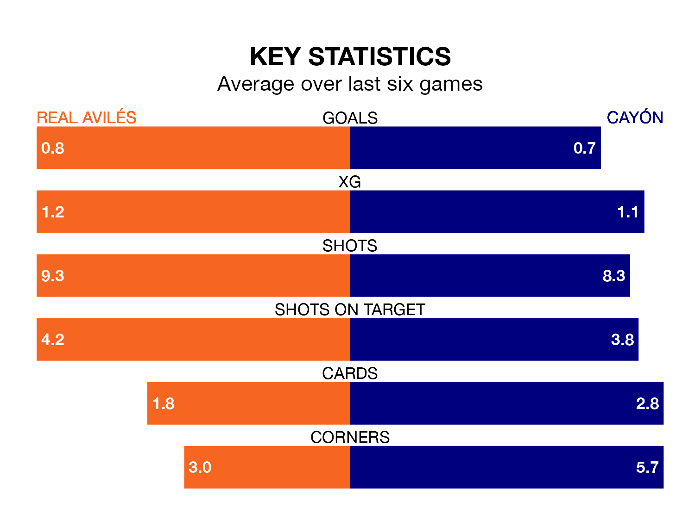

Cayón come to the Estadio Román Suárez Puerta to play Real Avilés on Sunday in poor form, having collected just four points from their last six games.
The visitors have won one and drawn one of their last six fixtures, while Avilés have two wins and two draws.
Cayón are 16th in the table after 22 games, of which they have won four and drawn eight, earning 20 points.
Avilés are eight places ahead of the visitors in eighth, with six wins and 11 draws putting them on 29 points.
With 21 goals in 22 games so far this season, Cayón are scoring at below the league average rate with 1.0 goals per game. And they are conceding more than average, letting in 30 goals at a rate of 1.4 per game.
The home team, meanwhile, are average scorers, with 1.1 goals per game. They have conceded 1.0 goal per game.
Avilés's last match was on February 11, a 2-0 win against Langreo.
Cayón lost 1-0 against Real Oviedo B last time out, also on February 11.
Updated: 13:30 (UTC), 12/02/24